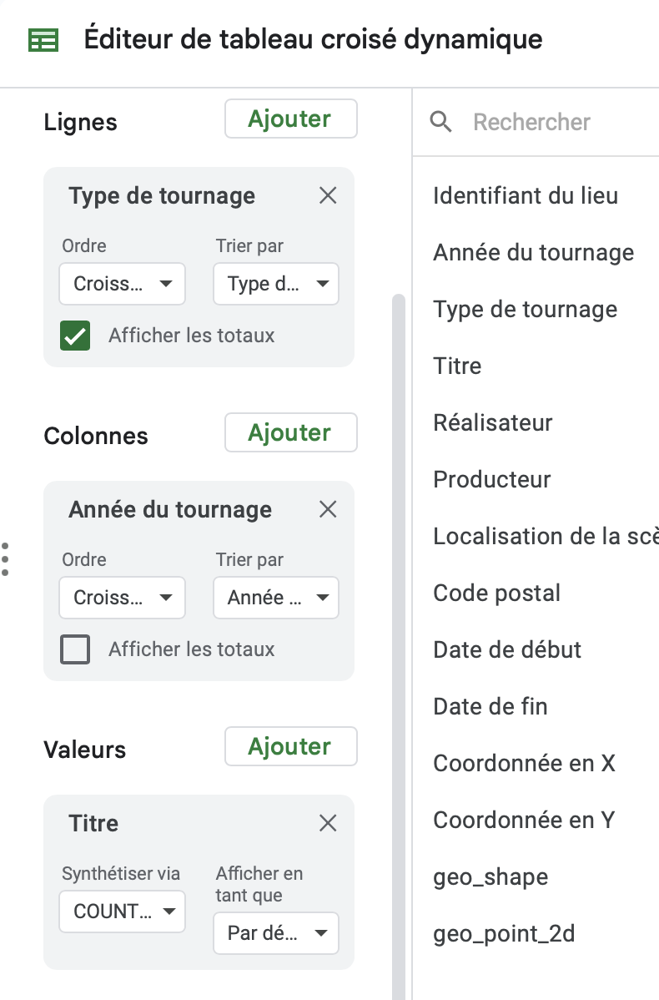

Données, information et savoirs
Cette présentation en ligne
https://samgoeta.github.io/donnees-information-savoirs/
Sources : https://github.com/samgoeta/donnees-information-savoirs
Ces slides sont librement réutilisables selon les termes de la licence Creative Commons 4.0 BY-SA.

Une tentative de définition exhaustive
Les données sont généralement comprises comme étant la matière première produite dans l’abstraction du monde en catégories, mesures et autres formes de représentation - nombres, caractères, symboles, images, sons, ondes électromagnétiques, bits - qui constituent les fondations sur lesquelles l’information et le savoir sont créés.

💡Les réflexes devant un jeu de données
✅ Retenir le nom du jeu de données
✅ Lire attentivement la description
✅ Regarder le format (SHP, XML, JSON… c’est compliqué)
✅ Regarder les noms des fichiers

✅ Connaître le producteur des données
✅ Chercher si possible d’ouvrir sur un “portail externe”
✅ Comprendre à quoi correspond chaque ligne
✅ Comprendre le contenu des colonnes
💡 Conseil avec l’explorateur de données de data.gouv.fr
Utilisez le petit entonnoir en haut de chaque colonne pour explorer les valeurs les plus fréquentes et faire des filtres :
Les valeurs les plus fréquentes dans une colonne peuvent vous aider à comprendre les données : 
A quoi ça ressemble ?

Disquette ?

Le numérique est partout mais, au milieu des récits alarmistes ou naïfs, il est difficile de repérer les bons contenus.
Sur le principe des bibliothèques idéales qui recensent les meilleurs contenus sur un sujet, Disquette vous fait découvrir de nouveaux contenus autour des enjeux du numérique en dépassant les idées reçues.
Documentaires, films, livres, BD, romans… tout a sa place dans Disquette.
Episodes precedents
A ecouter avant d’enregistrer le votre !

Objectifs de l’exercice
Vous allez produire une dataviz à partir des données que vous avez identifiées lors de la séance précédente.
🎯 Vos missions :
Comprendre la différence entre données brutes et données agrégées
Maîtriser les tableaux croisés dynamiques (pivot tables)
Choisir votre propre base de données à analyser
Créer une dataviz dans Datawrapper
Appliquer les 3 critères : Rigueur, Lisibilité, Éloquence

Une ressource pour vous aider à choisir le bon format de dataviz

Source : “A friendly guide to choosing a chart type de Datawrapper, un MUST pour choisir le bon format de visualisation en fonction de votre intention”
Comment créer une pivot table
📂 1. Importer données brutes
⚡ 2. Créer la pivot table
⚙️ 3. Configurer

Choisir votre base de données
Je vous conseille d’utiliser les données que vous avez exploré lors de la dernière séance.
Sinon vous pouvez vous appuyer sur les données identifiées par les autres binômes :